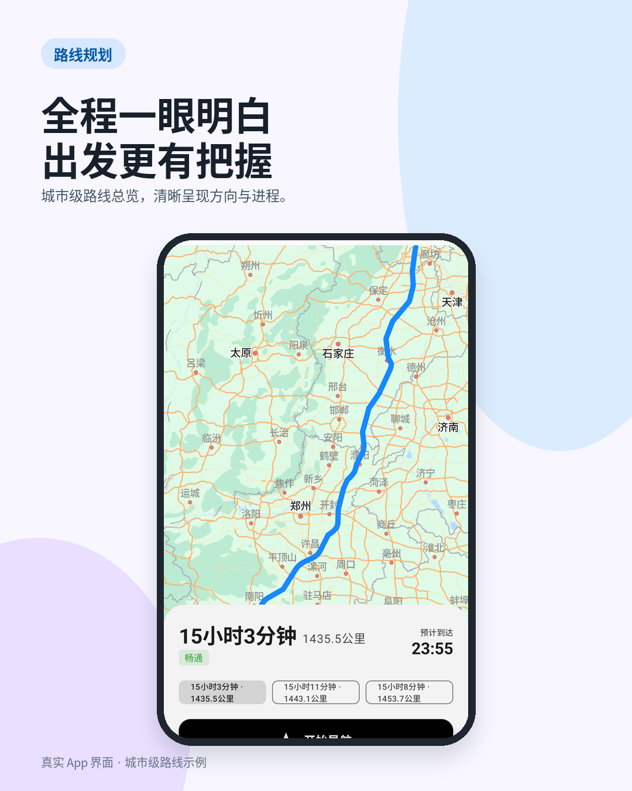
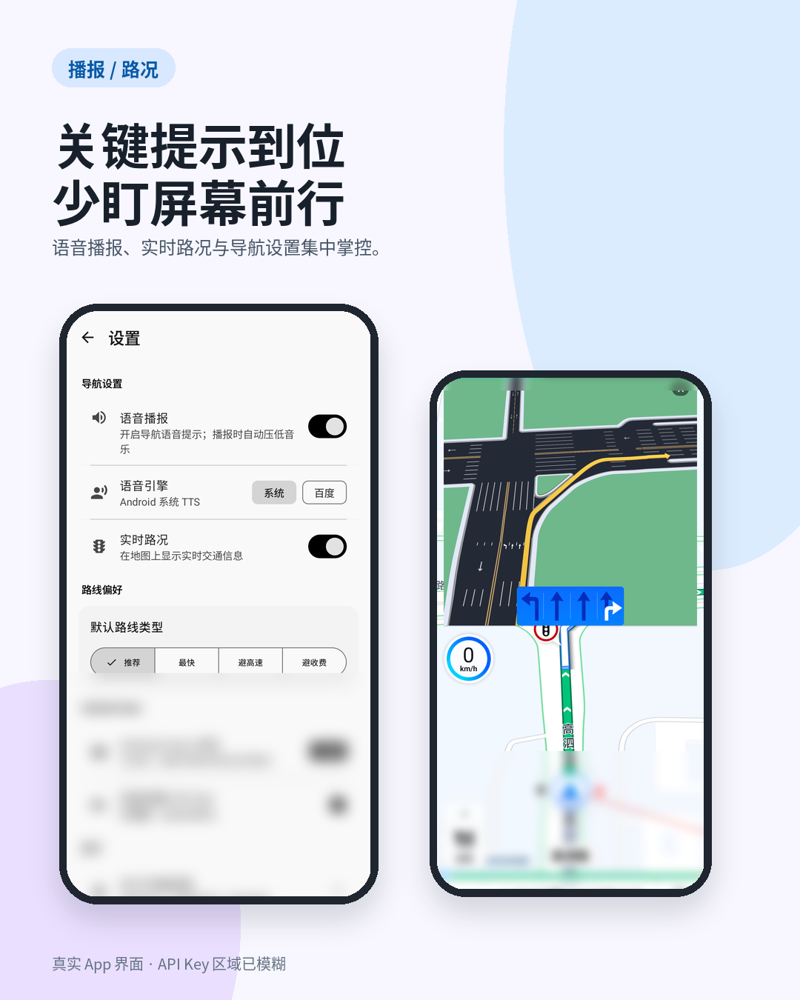

Funcionalidades principais
- Map positioning and POI search
- Driving route planning and built-in navigation
- Home, work and nearby shortcuts
- WeChat location forwarding
- Basic Wear OS adaptation
Maps and navigation
An Android map and navigation app built with Baidu Map and Navigation SDKs, with WeChat location forwarding and a dedicated Wear OS module.
Transferir ↓
Finding places, planning a drive, navigating, opening shared WeChat locations, and quick access to saved home or work addresses.
No account system or developer-operated server stores profiles, location trails or search history. Settings, shortcut addresses and some cache stay mainly on-device. Baidu SDKs process location, search, route, device and network data under their own policies.
A Baidu Map Android AK is required. Location or network permission withdrawal can stop map and navigation features. Android Auto is currently removed. Wear OS support is basic.



Instale apenas através das ligações oficiais.